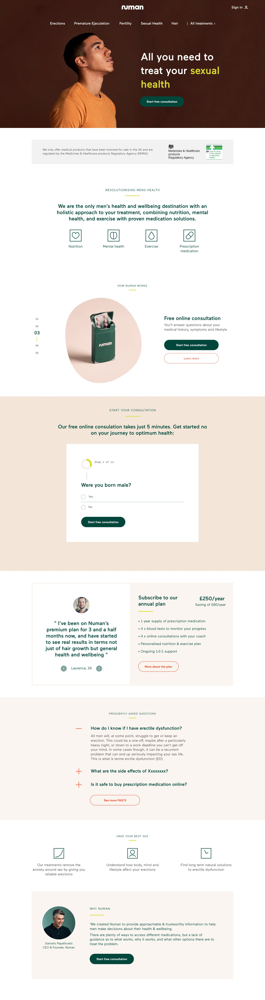
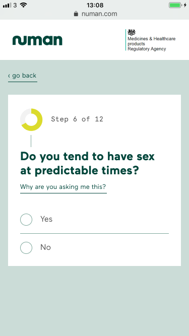
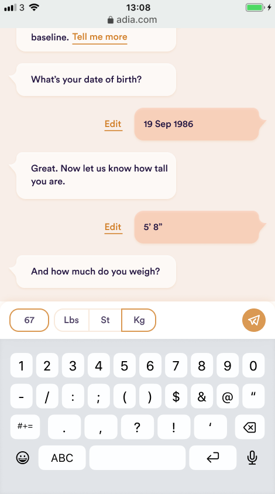
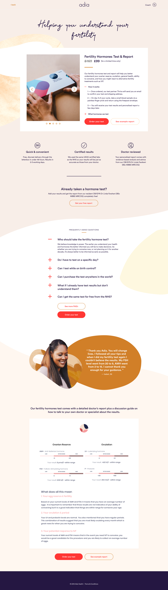

My experience in HealthTech covers both male health (Numan) and female health (Adia, later Parla). Adia was helping women and their partners who were struggling to conceive, and Numan offered prescription only medication and lifestyle support for men struggling with intimate or embarrassing health issues such as erectile dysfunction or hair loss.
Both were selling something intimate to someone embarrassed about needing it. Both open with a long questionnaire that is, at the same time, a real medical consultation and a purchase funnel. Below are four things I learned designing them.
Nobody wants sildenafil. They want to stop dreading sex. Nobody wants a hormone panel either — they want to know whether they can have a baby. What people are buying is a change in their own life, and there is nothing to photograph. The less tangible the thing you are selling, the more tangible your evidence has to be.
I designed the homepage to put the evidence before the pitch. The MHRA statement sits directly beneath the hero — the regulator's crest, and a registry badge you can click to verify. The four pillars of the treatment are named before any product is: nutrition, mental health, exercise, prescription medication. The founder appears by name and face, with his reason for starting the company.
Three of the ten Stanford web credibility guidelines are about precisely this — show your expertise, show the real people behind the site, show there is a real organisation.

Numan asks twelve questions before you can buy. Parla asks twenty. Received wisdom says strip that back — fewer fields, higher conversion.
Testing at Numan found this not to be true. People were not dropping out of the consultation. The questions were about the problem they had come to solve, so answering them felt like being understood rather than processed.
One question per screen across twelve numbered steps helps, but trust and legitimacy are always reinforced through the crest in the header. Under the questions people balk at there is a link: “Why are you asking me this?” Parla asked in a chat rather than a form, for a more familiar and conversational feel.


By this stage the user has established trust with the brand, and answered twenty questions about their body. Selling the physical product is the first paid thing in the funnel.
Neither company shows you a product before you have answered. At Numan you can't see which medicines are available until the consultation is finished (This is due to a legal restriction that prevents online pharmacies from listing prescription-only medications on general-access pages.); at Parla what gets recommended depends on what you said.
The funnel works as an exchange. By the time there is something to buy, it reads as a recommendation rather than a pitch.
